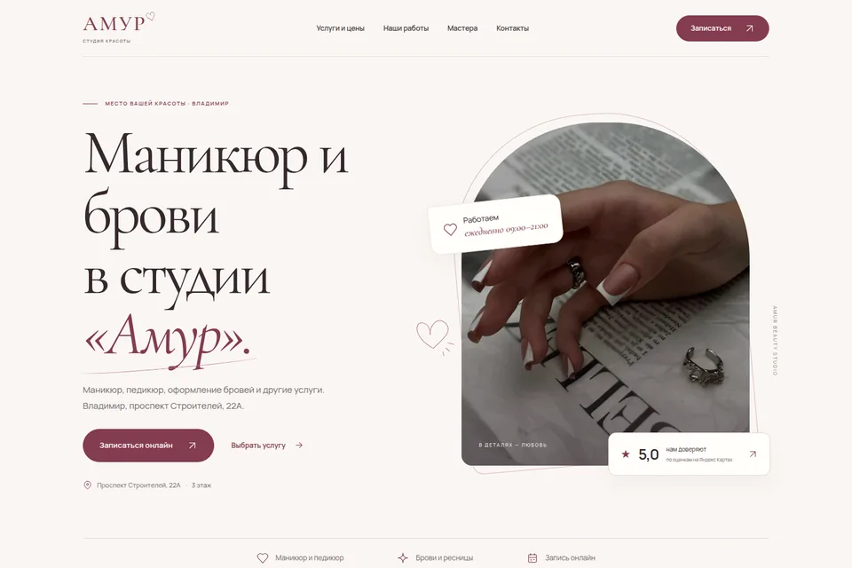
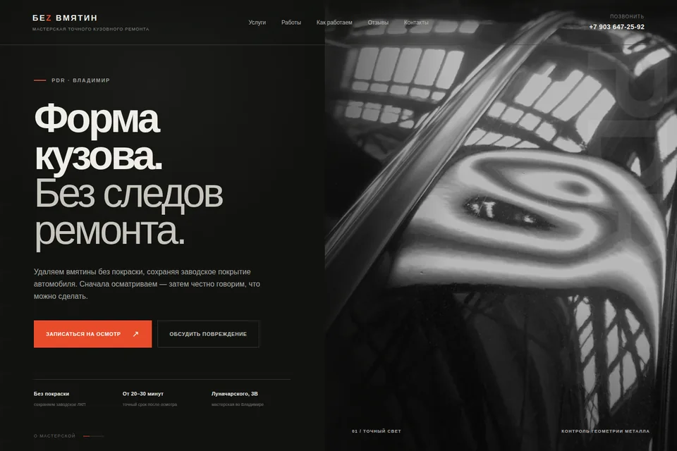

Лендинг
Одна страница для услуги, продукта или рекламной кампании.
Структура, дизайн, мобильная версия и форма обращения.
СОЗДАНИЕ И ПОДДЕРЖКА САЙТОВ
Лендинги, сайты компаний и интернет-магазины. Дорабатываем готовые сайты и подключаем CRM, оплату и другие сервисы.
УСЛУГИ
Создадим новый или доработаем тот, который уже есть.
Одна страница для услуги, продукта или рекламной кампании.
Структура, дизайн, мобильная версия и форма обращения.
Расскажите об услугах, покажите проекты и условия работы.
Страницы услуг, навигация, формы и управление материалами.
Каталог товаров, корзина и оформление заказа.
Карточки товаров, фильтры, оплата и доставка по согласованному объёму.
Обновим дизайн, исправим ошибки или добавим функции.
Правки интерфейса, новые разделы и подключение сервисов.
Не знаете, какой формат подойдёт? Расскажите о задаче →
РАБОТЫ
Демонстрационные сайты и концепции. Можно открыть и проверить самостоятельно.

Услуги и прайс, работы мастеров, контакты и переход к онлайн-записи.

Предложение по обновлению сайта сервиса по удалению вмятин.
СОТРУДНИЧЕСТВО
Понятный объём работ, промежуточные версии и проверка перед запуском.
Задачи по страницам, формам и интеграциям обсуждаете напрямую с человеком, который работает над сайтом.
До начала определяем страницы, функции и подключения. Новые задачи сначала обсуждаем, затем оцениваем.
Показываем макеты и промежуточные версии. Можно обсудить содержание и поведение интерфейса до публикации.
Проверяем не только внешний вид, но и формы, ссылки, мобильную версию и согласованные подключения.
Заранее обсуждаем страницы для рекламы, структуру для поиска и отслеживание обращений.
Начнём с конкретной проблемы. Иногда достаточно обновить страницу, исправить форму или подключить сервис.
Веб-разработчик. PHP / Laravel, сайты и интеграции.
ПОСЛЕ ЗАПУСКА И НЕ ТОЛЬКО
Можно заказать отдельно — в том числе для сайта другого разработчика.
Проверяем технические ошибки и готовим страницы под поисковые запросы.
ПодробнееНастраиваем кампании и отслеживаем обращения с рекламы.
ПодробнееПоказываем, откуда приходят посетители и какие действия совершают.
ПодробнееСвязываем CRM, оплату, доставку и уведомления о заявках.
ПодробнееИсправляем ошибки, обновляем компоненты и выполняем доработки.
ПодробнееРазработка, SEO и реклама — разные работы. Сначала выбираем нужное, затем согласуем состав и бюджет.
ЗАЧЕМ НУЖЕН САЙТ
Чтобы клиент мог разобраться в предложении, увидеть примеры и обратиться.
Соберите описания, цены, примеры работ и ответы на вопросы в одном месте. Клиенту не придётся искать их в переписке.
Ведите посетителя к конкретному предложению, а не заставляйте искать нужную услугу на общей странице.
Создавайте отдельные страницы под услуги и категории товаров. Работайте с содержанием и техническим состоянием сайта.
Покажите реальные проекты, фотографии и процесс работы. Объясните условия и представьте исполнителя.
Форма, запись или корзина помогут обратиться и вне вашего рабочего времени. Способ обработки выбираем под вашу работу.
Отслеживайте источники посещений и обращения. Эти данные помогут выбирать дальнейшие изменения.
Важны предложение, аудитория и обработка обращений. Сайт помогает представить услугу. Продвижение приводит посетителей, а аналитика показывает их действия.
СТОИМОСТЬ
Сначала определяем страницы, функции и материалы. Затем готовим оценку с конкретным составом работ.
Получить оценкуДля первой беседы техническое задание не обязательно.
Важно не только количество страниц, но и число разных макетов. Каталог из сотни товаров может использовать один шаблон, а несколько сложных экранов — потребовать отдельного проектирования.
Учитываем макеты, мобильную версию, иллюстрации, тексты и наполнение. До старта определяем, что уже готово, а что нужно подготовить.
Форма, корзина, личный кабинет и обмен со складом требуют разного объёма работы. Оцениваем конкретные сценарии, а не только название функции.
Для доработки сначала смотрим, на чём создан сайт и как устроен код. Может понадобиться диагностика, обновление компонентов или перенос.
SEO, ведение рекламы и новые материалы оцениваем отдельно. Рекламный бюджет — расходы на размещение, а не оплата разработки.
ЭТАПЫ
Вы понимаете, что делаем сейчас и что будет дальше.
Вы рассказываете о бизнесе и сайте. Уточняем страницы, функции и материалы.
Определяем работы, стоимость и сроки. Отдельно отмечаем дополнительные подключения.
Готовим макеты и рабочую версию. Обсуждаем промежуточный результат и правки.
Проверяем сайт, размещаем его и передаём согласованные доступы и инструкции.
Стоимость зависит от страниц, функций и готовности материалов. Пришлите описание задачи — подготовим оценку с составом работ. Единой цены на любые сайты нет.
Да. Для начала достаточно рассказать о бизнесе, описать задачу и показать несколько примеров. Поможем определить структуру и нужные функции.
Сначала посмотрим сайт и его техническую основу. После этого скажем, какие изменения можно сделать и какие доступы потребуются.
Срок зависит от объёма, готовности материалов и подключений. Согласуем его после обсуждения страниц, функций и этапов работы.
Да, если управление материалами предусмотрено в проекте. Заранее обсудим, что вы хотите обновлять самостоятельно, и подберём способ редактирования.
Нет, если она отдельно не включена в согласованный объём. Разработка, настройка и ведение рекламы, а также бюджет на размещение — разные статьи расходов.
Домен и размещение сайта, необходимые платные сервисы. Регулярная поддержка и новые задачи оплачиваются, если вы их заказываете. Обязательную подписку на разработку не добавляем.
Работаем удалённо: обсудить проект и показать промежуточную версию можно онлайн. Приезжать в офис не нужно.
НАЧНЁМ С РАЗГОВОРА
Опишите задачу или пришлите ссылку на существующий сайт. Обсудим, что нужно сделать, и подготовим оценку.
Никита Солдатов · работаю удалённо